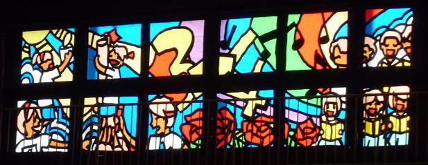

| 2012/03 13 Tue | ひめたん(* ゝω・*)ノ その102 |

中元日芽香、
中学校を卒業しましたー!!!
3月12日、
広島は春にしては珍しく雪がしとしと降ってて、
きっと空も寂しくて泣いてくれたんだと思います(*^^*)
体育館は卒業製作であるステンドグラスが飾られておしゃんてぃ-になってたっ
体育館の窓が教会みたいにきらきらしてるの!
真ん中の通路にはレッドカーペットが敷かれて、
きれいなお花なんか添えちゃってね(ω)?
それから、卒業式の時に歌ったうたは
作曲は先生、作詞は学級で話し合って案を出したオリジナルなんです。
だから伝えたいことが直球なんですよ(//ω//)
歌も、飾りつけも私たちの中学校らしさが出てて
最後まで卒業するのが名残惜しかったです。
そして先生から、ひとりひとりメッセージを書いた色紙のをいただきました。
あああーっ(/ω;`)
ひめたん進路を決めるときに、本当に悩んで悩んで
そのたびに先生にも相談にのっていただきました。
東京の高校だから情報が少ない中、頑張っていろいろ調べてくださって...
あんな熱心な先生に見ていただいて、本当によかった!
先生、本当にありがとうございました。
式が終わってから後輩たちとお別れ。
物資と呼べる物資は全部持ってかれました(^ω^)
セーター持ってかれちゃったからさーむい寒いっ!
全部ひめたんだと思って大切にしてほしいですー
1年前に卒業した先輩も駆け付けてくださって
ありがとうさようならしてきました。
一列に並んでもらうと、これだけの人に支えてもらってたのねってのが
一瞬で感じるから不思議ですね(∀)
親愛なる
お友達たち (*・ω・*)/
今までありがとう!
お別れゆ-て今は全然実感がわきません...
きっといつかのタイミングで壊れるだろうから、その時はメールします。
付き合いの長い短いはそれぞれ違うけど
一緒に過ごした時間がかけがえのないものだったことにかわりありません。
お腹痛くなるくらい大きな声で笑った
ちっちゃい子みたいにわんわん泣いた
ときに怒らせてしまうこともあったし
不安にさせたり心配かけたり。
いろ-んな感情を抱くとき、いつもとなりにはみんながいました。
ひとりだったら深く考えることなんてなかったよ。
卒業式のあと、み-んな顔がくっしゃくしゃだったよね。
泣きすぎて歌が震えてたけど、それだけ気持ちがこもってたってことで。
ずっと一緒にいたみんなが春からはとなりにいないなんて考えられない。
不安だし、不安だし、不安です正直。
だけど、みんなが「頑張れ」って背中を押してくれたからには
頑張らないわけにはいかないでしょーう(`・ω・')!
次は笑顔で帰ってきます！
みんなもそれぞれの進路に歩んでいくね。
元気でね。
みんなのことだから心配せんでも元気だろうけど
もし病んだらいつでも連絡しておいで('・ω・`)?
今までありがとう。
本当にありがとう。
もう1回言います。
今まで本当にありがとうございました!!!
 ひめちゃんって可愛い物とかキャラクターとか好きですか?(*'ω`*)
ひめちゃんって可愛い物とかキャラクターとか好きですか?(*'ω`*)
可愛いもの好き!
キャラクターなら「ジャッキーちゃん」ってくまさんとか好き(*^^*)
めっちゃおめめくりっくりでかわゆすよ-♪
ひめたんゎ乃木坂メンバーで誰と一番仲がぃいですか?
んんんっ。
ひめたんね、一番を決めるのただでさえ苦手なのに
仲良しの一番を決めてたら多分頭壊れちゃう('・д・`)←
みんな仲良いけどって前置きを忘れずに。
いくちゃん
(生田絵梨花chan)と
るんるん
(斉藤ちはるchan)の同い年3人組は
いつも一緒よお!
3人って何かと厄介なはずなんだけど
ここの3人組は気が合いまくりですよ∩^ω^∩
ひめたんがメンバーの似顔絵を描いたらどんな感じになるのかな?
ひめたんにも似顔絵振っちゃう(ω)?
でもひめたん画力は自信ないんよねー...
じゃ気がむいたら誰かの似顔絵書くかもしれないということで(^^)乞うご期待っ!
 ひめたんの好きな歌手は誰ですか?
ひめたんの好きな歌手は誰ですか?
Perfumeさん♪
3人とも大好きですっ!
勿論3人とも大好きなのは百も承知だけど、
1人選ぶとしたらPerfumeの3人の中で1番好きなのは誰かな?(・ω・)
来ましたこの質問っ。
Perfumeさん好きって言ったら、3人の中で誰が好き?ってなりますよねー?
Perfumeふぁんあるある(・ω・)
かしゆか
さんは、華奢でどんな衣装も着こなしてて憧れる!声可愛らしい!
あーちゃん
さんは、ふわふわしたキャラが濃ゆくて応援したくなるし憧れる!
のっち
さんは、トークの時の笑顔と歌う時のかっこよさのギャップに憧れる!
で、誰が1番好きですか?の答えなのですが
1番を決めてると頭に亀裂が走るかもしれない←
 日芽香ちゃんがPerfumeさんの曲で1番好きなのってなんですか??
日芽香ちゃんがPerfumeさんの曲で1番好きなのってなんですか??
レーザービーム
ナチュラルに恋して
リニアモーターガール
やっぱり1番は絞れそうにないです←
Best3を選ぶにも一苦労('・ω・`)にゃ
ひめたん(*´・ω・*)
コメント(144)
2012/03/13 16:06